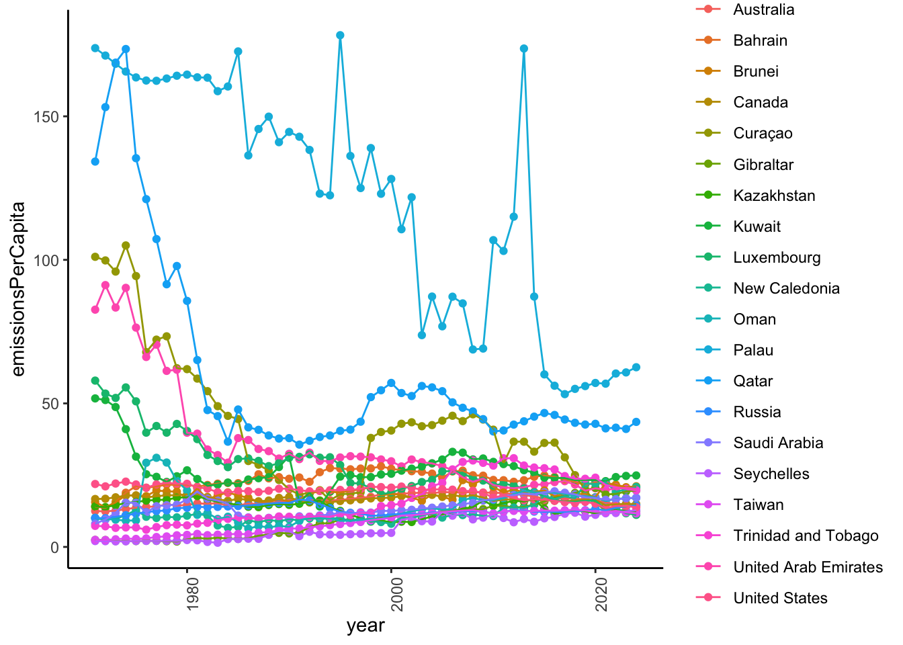
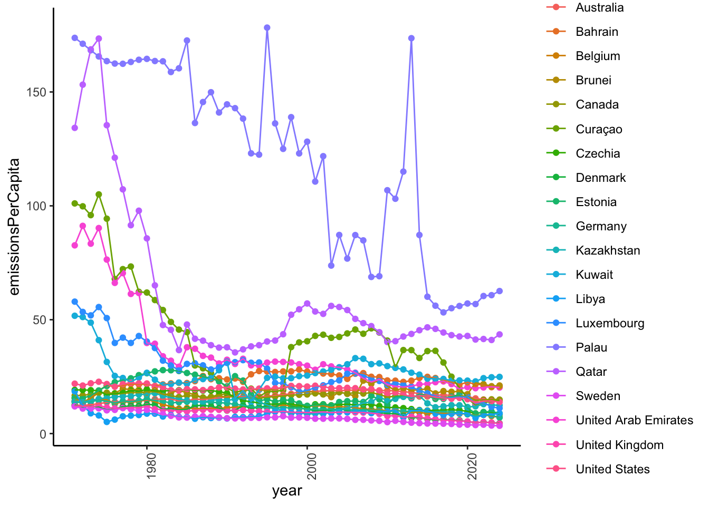

url <- "https://jeodpp.jrc.ec.europa.eu/ftp/jrc-opendata/EDGAR/datasets/EDGAR_2024_report/EDGAR_2024_GHG_booklet_2024_fossilCO2only.xlsx"
download.file(url, destfile = "data/edgar-co2-2024.xlsx", mode = "wb")It’s impossible to ignore the big decisions that Americans will be making next Tuesday. But neither campaign is talking about climate change in a serious way. I have my own thoughts about why, but let’s look at some data rather than pontificate.
I found that there is an Emissions Database for Global Atmospheric Research (EDGAR) site that collects data on these questions. Here is the site for emissions data from 1970 to 2024 for a large set of countries:
https://data.jrc.ec.europa.eu/dataset/74f34d14-5819-4954-8b61-b11ce3d4ca48
The following code downloads the data.
This is an Excel spreadsheet, so the readxl package will be helpful here.
Some poking around in the Excel spreadsheet indicates two tabs that are especially relevant fossil_CO2_per_GDP_by_country and fossil_CO2_per_capita_by_country.
sheets_avail <- readxl::excel_sheets("data/edgar-co2-2024.xlsx")
sheets_avail[1] "info" "citations and references"
[3] "fossil_CO2_totals_by_country" "fossil_CO2_by_sector_country_su"
[5] "fossil_CO2_per_GDP_by_country" "LULUCF_macroregions"
[7] "fossil_CO2_per_capita_by_countr"CO2_per_capita <- readxl::read_excel("data/edgar-co2-2024.xlsx", sheet = sheets_avail[7])
str(CO2_per_capita)tibble [212 × 57] (S3: tbl_df/tbl/data.frame)
$ Substance : chr [1:212] "CO2" "CO2" "CO2" "CO2" ...
$ EDGAR Country Code: chr [1:212] "ABW" "AFG" "AGO" "AIA" ...
$ Country : chr [1:212] "Aruba" "Afghanistan" "Angola" "Anguilla" ...
$ 1970 : num [1:212] 0.427 0.156 1.318 0.34 2.253 ...
$ 1971 : num [1:212] 0.485 0.152 1.23 0.338 2.197 ...
$ 1972 : num [1:212] 0.66 0.144 1.461 0.35 2.448 ...
$ 1973 : num [1:212] 0.735 0.144 1.559 0.323 2.147 ...
$ 1974 : num [1:212] 0.718 0.178 1.58 0.358 2.26 ...
$ 1975 : num [1:212] 0.946 0.161 1.419 0.391 2.25 ...
$ 1976 : num [1:212] 0.931 0.147 0.923 0.367 2.352 ...
$ 1977 : num [1:212] 1.112 0.175 1.48 0.381 2.463 ...
$ 1978 : num [1:212] 1.197 0.146 1.697 0.434 2.652 ...
$ 1979 : num [1:212] 1.266 0.155 1.641 0.48 3.022 ...
$ 1980 : num [1:212] 1.327 0.151 1.603 0.66 3.011 ...
$ 1981 : num [1:212] 1.369 0.173 1.431 1 2.586 ...
$ 1982 : num [1:212] 1.334 0.181 1.333 1.067 2.608 ...
$ 1983 : num [1:212] 1.357 0.242 1.331 0.933 2.741 ...
$ 1984 : num [1:212] 1.569 0.268 1.3 0.887 2.906 ...
$ 1985 : num [1:212] 1.652 0.35 1.329 0.552 2.721 ...
$ 1986 : num [1:212] 1.82 0.34 1.3 0.46 2.68 ...
$ 1987 : num [1:212] 2.081 0.285 1.293 0.853 2.657 ...
$ 1988 : num [1:212] 2.339 0.268 1.298 0.767 2.565 ...
$ 1989 : num [1:212] 3.235 0.246 1.277 0.773 2.43 ...
$ 1990 : num [1:212] 3.232 0.239 0.923 0.735 2.025 ...
$ 1991 : num [1:212] 3.501 0.219 0.938 0.876 1.337 ...
$ 1992 : num [1:212] 3.672 0.13 0.935 0.881 0.729 ...
$ 1993 : num [1:212] 3.467 0.118 0.906 1.076 0.697 ...
$ 1994 : num [1:212] 3.724 0.104 0.83 1.378 0.746 ...
$ 1995 : num [1:212] 3.9115 0.0856 0.9078 1.6741 0.6663 ...
$ 1996 : num [1:212] 2.4827 0.0795 1.0679 1.6134 0.6645 ...
$ 1997 : num [1:212] 4.011 0.0753 1.087 1.3179 0.511 ...
$ 1998 : num [1:212] 4.0207 0.0753 1.0988 1.1817 0.6169 ...
$ 1999 : num [1:212] 3.9943 0.0709 1.1305 1.0902 0.9907 ...
$ 2000 : num [1:212] 2.9561 0.0506 1.0043 1.4045 1.0354 ...
$ 2001 : num [1:212] 2.9222 0.0451 0.9534 1.4005 1.1015 ...
$ 2002 : num [1:212] 3.122 0.0429 0.9057 0.9302 1.2845 ...
$ 2003 : num [1:212] 3.5244 0.0437 0.952 1.1749 1.3536 ...
$ 2004 : num [1:212] 3.534 0.037 0.938 1.093 1.425 ...
$ 2005 : num [1:212] 3.8472 0.0505 0.7998 1.0824 1.3473 ...
$ 2006 : num [1:212] 4.2019 0.0544 0.8054 0.9944 1.3537 ...
$ 2007 : num [1:212] 4.5202 0.0755 0.8123 0.941 1.4036 ...
$ 2008 : num [1:212] 4.479 0.14 0.879 1.144 1.402 ...
$ 2009 : num [1:212] 4.857 0.217 0.935 1.488 1.443 ...
$ 2010 : num [1:212] 4.743 0.27 0.973 1.745 1.55 ...
$ 2011 : num [1:212] 2.843 0.384 0.977 1.866 1.704 ...
$ 2012 : num [1:212] 3.654 0.318 0.985 1.843 1.552 ...
$ 2013 : num [1:212] 3.996 0.262 1.098 1.955 1.634 ...
$ 2014 : num [1:212] 4.246 0.239 1.147 1.931 1.745 ...
$ 2015 : num [1:212] 4.428 0.247 1.188 1.918 1.664 ...
$ 2016 : num [1:212] 4.626 0.217 1.086 1.921 1.548 ...
$ 2017 : num [1:212] 4.433 0.227 0.938 1.951 1.823 ...
$ 2018 : num [1:212] 4.409 0.218 0.853 1.878 1.808 ...
$ 2019 : num [1:212] 5.261 0.195 0.867 1.819 1.686 ...
$ 2020 : num [1:212] 4.252 0.185 0.631 1.492 1.55 ...
$ 2021 : num [1:212] 4.679 0.204 0.745 1.468 1.712 ...
$ 2022 : num [1:212] 4.698 0.208 0.782 1.457 1.564 ...
$ 2023 : num [1:212] 4.908 0.214 0.782 1.435 1.558 ...We need to make this longer if we want to use Tidyverse-style plotting commands.
CO2_per_capita_long <- CO2_per_capita |>
tidyr::pivot_longer(
cols = (starts_with("19") |
starts_with("20")),
names_to = "year",
values_to = "emissionsPerCapita"
) |>
# Make the year a properly formatted YYYY-MM-DD string for parsing
dplyr::mutate(year = lubridate::as_date(paste0(year, "-12-31")))Now we can make our first attempt at a plot.
library(ggplot2)
CO2_per_capita_long |>
dplyr::filter(
Country %in% c(
"United States",
"China",
"Japan",
"Germany",
"France and Monaco",
"Canada",
"United Kingdom",
"Taiwan",
"South Korea",
"Australia"
)
) |>
ggplot2::ggplot() +
aes(year, emissionsPerCapita, color = Country, group = Country) +
geom_point() +
geom_line() +
theme_classic() +
theme(axis.text.x = element_text(angle = 90))
Let’s look at the top countries in 2023.
top_2023 <- CO2_per_capita_long |>
dplyr::filter(year == "2023-12-31") |>
dplyr::arrange(desc(emissionsPerCapita))
top_20_2023 <- top_2023[1:20,]
top_20_countries_2023 <- top_20_2023$Country
top_20_2023 |>
dplyr::select(Country, emissionsPerCapita) |>
kableExtra::kable(format = 'html') |>
kableExtra::kable_classic()| Country | emissionsPerCapita |
|---|---|
| Palau | 62.59089 |
| Qatar | 43.55052 |
| Kuwait | 24.89597 |
| Brunei | 21.12187 |
| New Caledonia | 20.90426 |
| Bahrain | 20.69999 |
| United Arab Emirates | 20.22100 |
| Trinidad and Tobago | 19.70759 |
| Gibraltar | 19.67394 |
| Saudi Arabia | 17.15496 |
| Oman | 17.11290 |
| Canada | 14.91330 |
| Curaçao | 14.66348 |
| Russia | 14.45143 |
| Australia | 14.21297 |
| United States | 13.83075 |
| Seychelles | 12.75529 |
| Kazakhstan | 12.43028 |
| Taiwan | 11.67587 |
| Luxembourg | 11.17618 |
Let’s see how these countries fared since 1970.
CO2_per_capita_long |>
dplyr::filter(Country %in% top_20_2023$Country) |>
ggplot2::ggplot() +
aes(year, emissionsPerCapita, color = Country, group = Country) +
geom_point() +
geom_line() +
theme_classic() +
theme(axis.text.x = element_text(angle = 90))
Now, let’s see how the top 20 in 1970 have changed.
top_1970 <- CO2_per_capita_long |>
dplyr::filter(year == "1970-12-31") |>
dplyr::arrange(desc(emissionsPerCapita))
top_20_1970 <- top_1970[1:20,]
top_20_countries_1970 <- top_20_1970$Country
top_20_1970 |>
dplyr::select(Country, emissionsPerCapita) |>
kableExtra::kable(format = 'html') |>
kableExtra::kable_classic()| Country | emissionsPerCapita |
|---|---|
| Palau | 173.76140 |
| Qatar | 134.23816 |
| Curaçao | 101.06091 |
| United Arab Emirates | 82.65335 |
| Luxembourg | 57.93929 |
| Kuwait | 51.73405 |
| United States | 21.92427 |
| Czechia | 19.17800 |
| Libya | 18.54289 |
| Canada | 16.69381 |
| Estonia | 15.63304 |
| Brunei | 15.62203 |
| Belgium | 14.45745 |
| Kazakhstan | 14.11505 |
| Bahrain | 14.00774 |
| Germany | 13.80446 |
| Denmark | 12.56345 |
| Australia | 12.48760 |
| United Kingdom | 12.10428 |
| Sweden | 11.93955 |
CO2_per_capita_long |>
dplyr::filter(Country %in% top_20_1970$Country) |>
ggplot2::ggplot() +
aes(year, emissionsPerCapita, color = Country, group = Country) +
geom_point() +
geom_line() +
theme_classic() +
theme(axis.text.x = element_text(angle = 90))
So, the top emitters per capita in 1970 have made substantial progress in reducing emissions. The top emitters in 2023 also made substantial reductions from 1970 to 2023.
The East Asian countries that have have increased emissions per capita since 1970 (China, Taiwan, Japan, South Korea) have joined the mid-ranks of the other wealthy countries in emissions per capita.
This all strikes me as very interesting, and largely positive news. The data story I would tell is that the world is getting richer, and that per capita CO2 emissions are falling into a similar range, even among countries that have grown quickly over the past 50 years. We just need to do more, especially those of us living in wealthy, large countries who can.